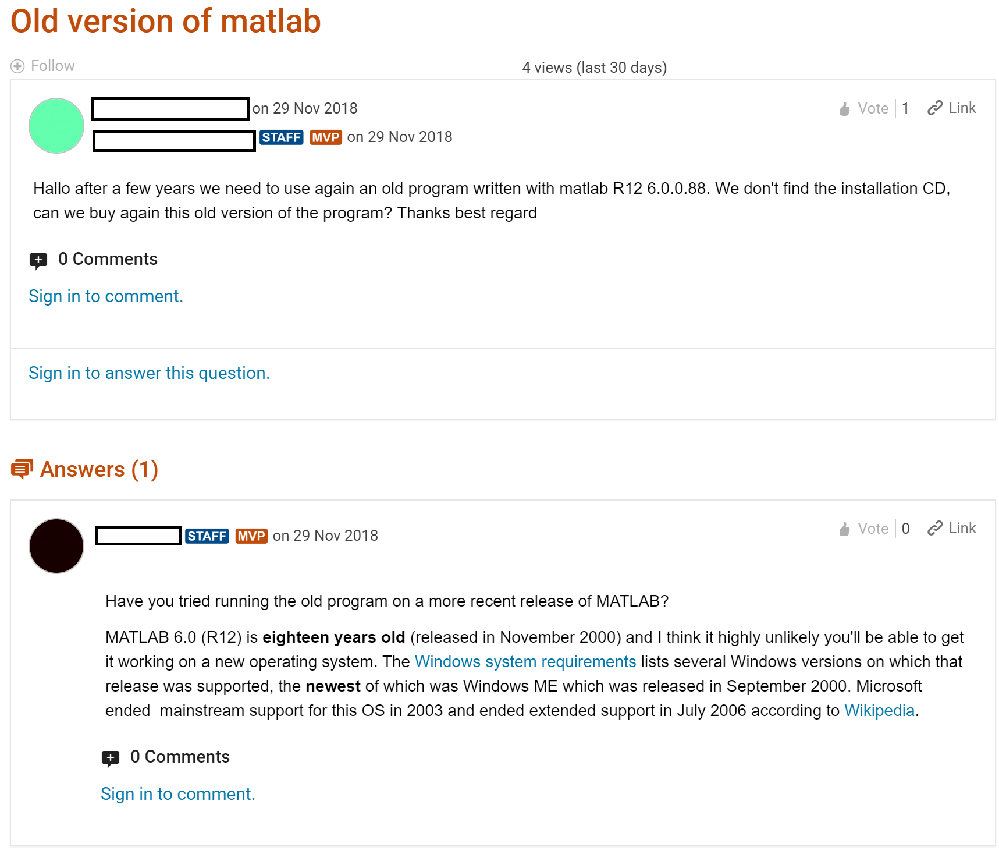
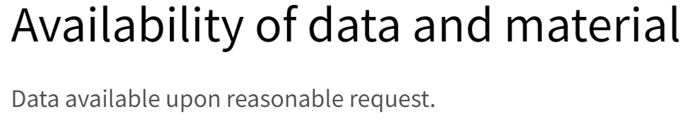
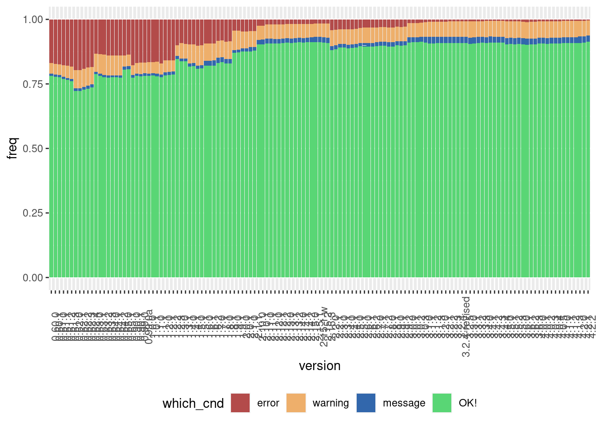

knitr::include_graphics("images/matlab_old_version.png")1 Introduction
This book will not teach you about machine learning, statistics or visualisation. The goal is to teach you a set of tools, practices and project management techniques that should make your projects easier to reproduce, replicate and retrace. These tools and techniques can be used right from the start of your project at a minimal cost, such that once you’re done with the analysis, you’re also done with making the project reproducible. Your projects are going to be reproducible simply because they were engineered, from the start, to be reproducible.
1.1 Who is this book for?
This book is for anyone that uses raw data to build any type of output based on that raw data. This can be a simple quarterly report for example, in which the data is used for tables and graphs, or a scientific article for a peer reviewed journal or even an interactive web application. It doesn’t matter, because the process is, at its core, always very similar:
- Get the data;
- Clean the data;
- Write code to analyse the data;
- Put the results into the final product.
This book will already assume some familiarity with programming, and in particular the R programming language. However, if you’re comfortable with another programming language like Python, you could still learn a lot from reading this book. Some tools presented in this book are specific to R, but there will always be an alternative for the language you prefer using, meaning that you could apply the advice from this book to your needs and preferences.
1.2 What is the aim of this book?
The aim of this book is to make the process of analysing data as reliable, retraceable, and reproducible as possible, and do this by design. This means that once we’re done with the analysis, we’re done. We don’t want to spend time, nor have the time, to rewrite or refactor an analysis and make it reproducible after the fact. We all know that this is not going to happen. Once an analysis is done, it’s time to go to the next analysis. And if we need to rerun an older analysis (for example, because the data got updated), then we’ll simply figure it out at that point. Hopefully, we will remember every quirk of our code and know which script to run at which point in the process, which comments are outdated and can be safely ignored, what features of the data need to be checked (and when they need to be checked), and so on…
Going forward, we’re going to refer to the process above as a “reproducible analytical pipeline”, or RAP for short. There are only two ways to make such a RAP reproducible; either we are lucky enough to have someone on the team whose job is to do this, or we do it ourselves. And this second option is very likely the most common. The issue is, as stated above, that we simply don’t do it. We are always in the rush to get to the results, and don’t think about making the process reproducible. This is because we always think that making the process reproducible takes time and this time is better employed to perform the analysis itself. But this is a misconception, for two reasons.
The first reason is that employing the techniques that we are going to discuss in this book, won’t actually take much time. As you will see, they’re not really things that you “add on top of the analysis” that take time, but will be part of the analysis and project management themselves. And some of these techniques will even save you time (especially testing) and headaches.
The second reason is that an analysis is never, ever, a one-shot. Only the most simple things, like pulling out a number from some data base may be a one-shot. And even then, chances are that once you provide that number, you’ll be asked to pull out a variation of that number (for example, by disaggregating by one or several variables). Or maybe you’ll get asked for an update to that number in six months. So you will learn very quickly to keep that SQL query in a script somewhere to make sure that you provide a number that is consistent. But what about more complex analyses? Is keeping the script enough? Well that’s already a good start. The problem is that very often, there is no script, or not a script for each step of the analysis.
I’ve seen this play out many times in many different organisations. It’s that time of the year again, we have to write a report. 10 people are involved, and just gathering the data is already complicated. Some get their data from Word documents attached to emails, some from a website, some from a report from another department that is a PDF… I remember a story that a senior manager at my previous job used to tell us: once, a client put out a call for a project that involved helping them setting up a PDF scraper. They periodically needed data from another department that came in PDFs. The manager asked what was, at least from our perspective, an obvious question: why can’t they send you the underlying data from that PDF in a machine readable format? They had never thought to ask. So my manager went to that department, and talked to the people putting that PDF together. Their answer? “Well, we could send them the data in any format they want, but they’ve asked us to send the tables in a PDF format”.
So the first, and probably most important lesson here is: when starting to build a RAP, make sure that you talk with all the people involved.
1.3 Prerequisites
You should be comfortable with the R programming language. This book will assume that you have been using R for some projects already, and want to improve not only your knowledge of the language itself, but also how to successfully manage complex projects. Ideally, you should know about packages, how to install them, you should have written some functions already, know about loops and have some basic knowledge of data structures like lists. While this is not a book on visualisation, we will be making some graphs using the {ggplot2} package, so if you’re familiar with that, that’s good. If not, no worries, visualisation, data munging or data analysis is not the point of this book.
Ideally, you should also not be afraid of not using Graphical User Interfaces (GUI). While you can follow along using an IDE like RStudio, we will not be teaching any features from any program with a GUI. This is not to gatekeep, but because interacting graphically with a program is simply not reproducible. This is the second lesson of building RAPs: there should be no human intervention needed to get the outputs once the RAP is started. So our target is to write code that can be executed non-interactively by a machine. This is because one necessary condition for a workflow to be reproducible and get referred to as a RAP, is for the workflow to be able to be executed by a machine, automatically, without any human intervention. If this is the case, then your workflow is likely reproducible, or can at least be made reproducible much more easily than if it requires some special manipulation by a human somewhere in the loop.
1.4 What is reproducibility?
A reproducible project means that this project can be rerun by anyone at 0 (or very minimal) cost. But there are different levels of reproducibility, and we will discuss this in the next section. Let’s discuss some requirements that a project must have to be considered a RAP.
1.4.1 Using open-source tools to build a RAP is a hard requirement
Open source is a hard requirement for reproducibility.
No ifs nor buts. And I’m not only talking about the code you typed for your research paper/report/analysis. I’m talking about the whole ecosystem that you used to type your code and build the workflow.
Is your code open? That’s good. Or is it at least available to other people from your organisation, in a way that they could re-execute it if needed? Good.
But is it code written in a proprietary program, like STATA, SAS or MATLAB? Then your project is not reproducible. It doesn’t matter if this code is well documented and written and available on a version control system (internally to your company or open to the public). This project is not reproducible. Why?
Because there is no way to re-execute your code with the exact same version of this proprietary program down the line. As I’m writing these lines, MATLAB, for example, is at version R2022b. And buying an older version is not guaranteed. I’m sure if you contact their sales department they might be able to sell you an older version. Maybe you can even simply redownload older versions that you’ve already bought. But maybe it’s not that simple. Or maybe they won’t offer this option anymore in the future, who knows? In any case, if you google “purchase old version of Matlab” you will see that many researchers and engineers have this need.

1.4.2 knitr include graphs
1.4.3 html
And if you’re running old code written for version, say, R2008a, there’s no guarantee that it will produce the exact same results on version 2022b. And let’s not even mention the toolboxes (if you’re not familiar with MATLAB’s toolboxes, they’re the equivalent of packages or libraries in other programming languages). These evolve as well, and there’s no guarantee that you can purchase older versions of said toolboxes. And it’s likely that newer versions of toolboxes cannot even run on older versions of Matlab.
And let me be clear, what I’m describing here with MATLAB could also be said for any other proprietary programs still commonly (unfortunately) used in research and in statistics (like STATA or SAS). And even if some, or even all, of the editors of these proprietary tools provide ways to buy and run older versions of their software, my point is that the fact that you have to rely on them for this is a barrier to reproducibility, and there is no guarantee they will provide the option to purchase older versions forever. Also, who guarantees that they will be around forever? Or, and that’s more likely, that they will keep offering a program that you install on your machine instead of shifting to a subscription based model?
For just $199 a month, you can execute your SAS/STATA/MATLAB scripts on the cloud! Worry about data confidentiality? No worries, data gets encrypted and stored safely on our secure servers! Run your analysis from anywhere and don’t worry about losing your work if your cat knocks over your coffee on your laptop! And if you purchase the pro licence, for an additional $100 a month, you can even execute your code in parallel!
Think this is science fiction? Google “SAS cloud” to see SAS’s cloud based offering.
1.4.5 The requirements of a RAP
So where does that leave us? Basically, for something to be truly reproducible, it has to respect the following bullet points:
- Source code must obviously be available and thoroughly tested and documented (which is why we will be using Git and Github);
- All the dependencies must be easy to find and install (we are going to deal with this using dependency management tools);
- To be written with an open source programming language (nocode tools like Excel are by default non-reproducible because they can’t be used non-interactively, and which is why we are going to use the R programming language);
- The project needs to be run on an open source operating system (thankfully, we can deal with this without having to install and learn to use a new operating system, thanks to Docker);
- Data and the paper/report need obviously to be accessible as well, if not publicly as is the case for research, then within your company. This means that the concept of “scripts and/or data available upon request” belongs in the trash.

1.5 Are there different types of reproducibility?
Let’s take one step back: we live in the real world, and in the real world, there are some constraints that are outside of our control. These constraints can make it impossible to build a true RAP, so sometimes we need to settle for something that might not be a true RAP, but a second or even third best thing.
In what follows, let’s assume this: in the discussion below, code is tested and documented, so let’s only discuss the code running the pipeline itself.
The worst reproducible pipeline would be something that works, but only on your machine. This can be simply due to the fact that you hardcoded paths that only exist on your laptop. Anyone wanting to rerun the pipeline would need to change the paths. This is something that needs to be documented in a README which we assumed was the case, so there’s that. But maybe this pipeline only runs on your laptop because the computational environment that you’re using is hard to reproduce. Maybe you use software, even if it’s open source software, that is not easy to install (anyone that tried to install R packages on Linux that depend on the {rJava} package know what I’m talking about).
So a least worse pipeline would be one that could be run more easily on any similar machine as yours. This could be achieved by not using hardcoded absolute paths, and by providing instructions to set up the environment. For example, in the case of R, this could be as simple as providing a script called something like install_deps.R that would be a call to install.packages(). It could look like this:
install.packages(c("package1",
"package2",
etc))The issue here is that you need to make sure that the right versions of the packages get installed. If your script uses {ggplot2} version 2.2.1, then users should install this version as well, and by running the script above, the latest version of {ggplot2} (as of writing, version 3.4.0) will get installed. Maybe that’s not a problem, but it can be if your script uses a function from version 2.2.1 that is not available anymore in the latest version (or maybe its name got changed, or maybe it was modified somehow and doesn’t provide the exact same result). And the more packages the script uses (and the older it is), the higher the likelihood that some package version will not be compatible. There is also the issue of the R version itself. Generally speaking, recent versions of R seem to not be too bad when it comes to running older code written in R. I know this because in 2022 I’ve ran every example that comes bundled with R since version 0.6.0 on the then current version of R, version 4.2.2. Here is the result of this experiment:

This graph shows the following: for each version of R, starting with R version 0.6.0 (released in 1997), how well the examples that came with a standard installation of R run on the current version of R (version 4.2.2 as of writing). These are the examples from the default packages like {base}, {stats}, {stats4}, and so on. Turns out that more than 75% of the example code from version 0.6.0 still work on the current version of R. A small fraction output a message (which doesn’t mean the code doesn’t work), some 5% raise a warning, which again doesn’t necessarily mean that the code doesn’t work, and finally around 20% or so errors. As you can see, the closer we get to the current release, the less errors get raised (if you want to run the code for yourself, check out this Github repository).
(But something important should be noted: just because some old piece of code runs without error, doesn’t mean that the result is exactly the same. There might be cases where the same function returns different results on different versions of R.)
But while this is evidence of R itself being quite stable through time, there are studies that show a less rosy picture. In a recent study (Trisovic et al. (2022) 1), some researchers tried to rerun up to 9000 R scripts downloaded from the Harvard Dataverse. There were several issues when trying to rerun the scripts, which lead to, and I quote the paper here, “[…] 74% of R files [failing] to complete without error in the initial execution, while 56% failed when code cleaning was applied, showing that many errors can be prevented with good coding practices”.
The take-away message is that counting on the language itself being stable through time as a sufficient condition for reproducibility is not enough. We have to set up the code in a way that it actually is reproducible.
So what does this all mean? This means that reproducibility is on a continuum, and depending on the constraints you face your project can not very reproducible to totally reproducible. Let’s consider the following list of anything that can influence how reproducible your project truly is:
- Version of the programming language used;
- Versions of the packages/libraries of said programming language used;
- Operating System, and its version;
- Versions of the underlying system libraries (which often go hand in hand with OS version, but not necessarily).
- And even the hardware architecture that you run all that software stack on.
So by “reproducibility is on a continuum”, what I mean is that you could set up your project in a way that none, one, two, three, four or all of the preceding items are taken into consideration when making your project reproducible.
This is not a novel, or new idea. Peng (2011) already discussed this concept but named in the reproducibility spectrum. In part 2 of this book, I will reintroduce the idea and call it the “reproducibility iceberg”.

Let me just finish this introduction by the last item on the previous list: hardware architecture by discussing a fairly recent event in computing. You see, Apple has changed hardware architecture recently, their new computers switched from Intel based hardware to their own proprietary architecture (Apple Silicon) based on the ARM specification. And what does that mean concretely? It means that all the binary packages that were built for Intel based Apple computers cannot work on their new computers. Which means that if you have a recent M1 Macbook and need to install old CRAN packages to rerun a project (and we will learn how to do this later in the book), these need to be compiled to work on M1. You cannot even install older versions of R, unless you also compile those from source! This is because these older versions of R and packages were compiled to run on the previous architecture that Apple used for their computers, and cannot be run on the current architecture. Now I have read about a compatibility layer called Rosetta which enables to run binaries compiled for the Intel architecture on the ARM architecture, and maybe this works well with R and CRAN binaries compiled for Intel architecture. Maybe, I don’t know. But my point is that you never know what might come in the future, and thus needing to be able to compile from source is important, because compiling from source is what requires the least amount of dependencies that are outside of your control. Relying on binaries is not future-proof (and which is again, another reason why open-source tools are a hard requirement for reproducibility).
And for you Windows users, don’t think that the preceding paragraph does not concern you. I think that it is very likely that Microsoft will push in the future for OEM manufacturers to develop more ARM based computers. There is already an ARM version of Windows after all, and it has been around for quite some time, and I think that Microsoft will not kill that version any time in the future. This is because ARM is much more energy efficient than other architectures, and any manufacturer can build its own ARM cpus by purchasing a license, which can be quite interesting. For example in the case of Apple Silicon cpus, Apple can now get exactly the cpus they want for their machines and make their software work seamlessly with it. I doubt that others will pass the chance to do the same.
Also, something else that might happen is that we might move towards more and more cloud based computing, but I think that this scenario is less likely than the one from before. But who knows. And in that case it is quite likely that the actual code will be running on Linux servers that will likely be ARM based because of energy costs. Here again, if you want to run your historical code, you’ll have to compile old packages and R versions from source.
Ok, so this might seem all incredibly complicated. How on earth are we supposed to manage all these risks and balance the immediate need for results with the future need of rerunning an old project? And what if rerunning this old project is not even needed in the future?
This is where this book will help you. By employing the techniques discussed in this book, not only will it be very easy and quick to set up a project from the ground up that is truly reproducible, the very fact of building the project this way will also ensure that you avoid mistakes and producing results that are wrong. It will be easier and faster to iterate and improve your code, to collaborate, and ultimately to trust the results of your pipelines. So even if no one will rerun that code ever again, you will still benefit from the best practices presented in this book. Let’s dive in!
https://www.nature.com/articles/s41597-022-01143-6↩︎